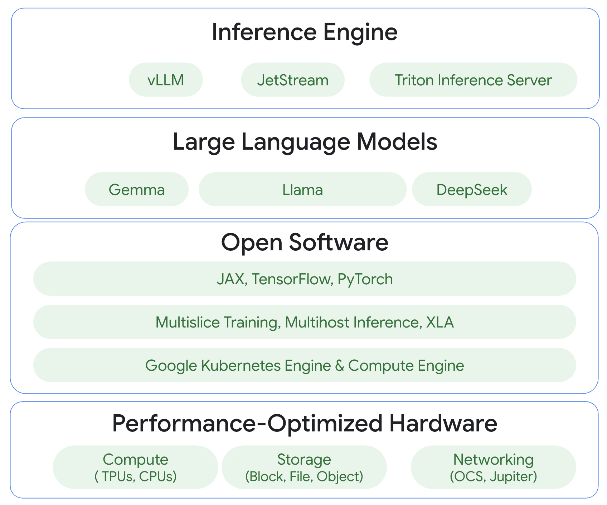

TPU LLM Inference Handbook
# Part 1: The foundations
Let’s start our journey with a simple, hands-on experiment. Before we dive into the complexities of the Large Language Model (LLM) and specialized accelerator hardware, let’s run a single piece of Python code. This script performs one of the most fundamental operations in computing: multiplying two matrices together.
Review the following python program (also available in source repo).
Click to see code
import torch
import time
# --- Benchmark Configuration ---
# BENCHMARK_ITERATIONS mimic the steady-state operation of
# an inference server under a continuous load of user requests.
BENCHMARK_ITERATIONS = 100
def run_matmul_on_cpu():
# Set the device explicitly to CPU
device = torch.device("cpu")
print(f"Using device: {device}")
# Define matrix dimensions (conceptual for an LLM layer)
# batch_size: number of input sequences processed in parallel
# hidden_size: dimension of the hidden states (e.g., 4096, 8192)
# intermediate_size: typically 4x hidden_size in Transformer FFNs
batch_size = 128
hidden_size = 4096
intermediate_size = 16384 # 4 * hidden_size for FFN
print(f"Simulating MatMul for LLM Feed-Forward Network:")
print(f" Batch size: {batch_size}")
print(f" Input features (hidden_size): {hidden_size}")
print(f" Output features (intermediate_size): {intermediate_size}")
# Create random input tensor and weight matrix on the CPU device
# Using float32 (standard float) for CPU computation
input_tensor = torch.randn(batch_size, hidden_size, dtype=torch.float32).to(device)
weight_matrix = torch.randn(hidden_size, intermediate_size, dtype=torch.float32).to(device)
print(f"\nInput tensor shape: {input_tensor.shape} (dtype: {input_tensor.dtype})")
print(f"Weight matrix shape: {weight_matrix.shape} (dtype: {weight_matrix.dtype})")
# --- Benchmark Phase ---
print(f"Performing {BENCHMARK_ITERATIONS} benchmark iterations...")
start_time = time.perf_counter()
for _ in range(BENCHMARK_ITERATIONS):
output_tensor = torch.matmul(input_tensor, weight_matrix)
end_time = time.perf_counter()
total_time_ms = (end_time - start_time) * 1000
print(f"\n--- Results ---")
print(f"Total time for {BENCHMARK_ITERATIONS} iterations: {total_time_ms:.4f} ms")
print(f"Average time per iteration: {total_time_ms / BENCHMARK_ITERATIONS:.4f} ms")
# Clean up (optional)
del input_tensor, weight_matrix, output_tensor
if __name__ == "__main__":
try:
print("--- Matrix Multiplication Benchmark (CPU) ---")
run_matmul_on_cpu()
except Exception as e:
print(f"An error occurred: {e}")
print("Please ensure you have PyTorch installed to run this code.")This simple calculation, a batch of computational “heartbeats” is the key to understanding the immense power and challenge of running modern artificial intelligence.
Run this program locally (You will need to have python installed and configured).
pip install torch
python matrix_heartbeat_cpu.pyObserve how long it takes to complete the task. It might take an average of ~30 - 50ms milliseconds per iteration on a modern laptop.
This guide is the first in a series dedicated to harnessing the power of Google’s Tensor Processing Units (TPUs) for inference. We will build our understanding from the ground up, moving from architectural theory to practical, hands-on application.
- Part 1 (This Post): The journey begins with the fundamentals. We will explore the TPU inference architecture, set up a Google Cloud environment, provision our first TPU Virtual Machine (VM), and re-run our “heartbeat” script to witness a dramatic acceleration.
- Part 2 & Beyond: Building on this foundation, the series will progress to deploying a full LLM (like Meta’s Llama 3), exploring advanced serving techniques with high-performance systems, and ultimately scaling our solution for production using Google Kubernetes Engine (GKE).
From Simple Math to Complex AI: The Transformer’s Core
The script you just ran performed a single matrix multiplication. It may seem basic, but this exact mathematical operation, scaled up thousands of times and chained together in intricate layers, is the fundamental building block of the Transformer architecture. This architecture is the engine behind virtually all state-of-the-art LLMs.
When an LLM generates text, it’s not “thinking” in a human sense. It is, at its core, executing a staggering number of matrix and vector computations. These operations occur in two key parts of every Transformer layer:
- Self-Attention: This is the mechanism that allows the model to weigh the importance of different words in the input text. To do this, it transforms the input data into three matrices: Query (Q), Key (K), and Value (V). The core of the attention calculation is a massive matrix multiplication of Q and K.
- Feed-Forward Networks: After the attention mechanism, the data passes through a standard neural network layer, which again is fundamentally a series of matrix multiplications followed by non-linear activation functions.
An LLM with billions of parameters is, in essence, a vast collection of these matrix operations. Running inference—the process of generating a response from a trained model—requires executing these calculations as quickly and efficiently as possible. Your CPU can handle one multiplication, but to serve a real-world application, we need hardware specifically designed for this task.
The Rhythmic Heart of AI: Why TPUs Excel at LLM Inference
To truly appreciate why a developer should invest time in learning TPUs, it is essential to move beyond the simple statement “it’s fast” and delve into the architectural elegance that makes this speed possible. The advantage of the TPU is not just an incremental improvement; it is a paradigm shift in processing designed specifically for the mathematics of machine learning.
Traditional processors, including Central Processing Units (CPUs) and Graphics Processing Units (GPUs), are built upon the von Neumann architecture. This model involves a processing unit that fetches instructions and data from a separate memory unit, performs a computation, and writes the result back to memory. An effective analogy is a chef (the processor) who must constantly run to a pantry (memory) to retrieve one ingredient at a time for each step of a recipe. This constant back-and-forth travel creates a significant performance limitation known as the “von Neumann bottleneck”. While GPUs dramatically increase performance by employing thousands of chefs working in parallel, they all still run to the same pantry, meaning memory access remains a fundamental constraint.
The Tensor Processing Unit (TPU) was designed to solve this very problem for machine learning workloads. At its core is a component called the Matrix Multiply Unit (MXU), which contains a systolic array. This architecture represents a complete departure from the fetch-and-execute model. The term “systolic” is an analogy to the human circulatory system, where the heart pumps blood in a steady, rhythmic pulse. Similarly, in a TPU, data is not fetched from memory for each individual calculation. Instead, it is pumped rhythmically through a large, two-dimensional grid of simple processors.
Each cell in the systolic array performs a simple multiply-accumulate (MAC) operation on the data it receives from an upstream neighbor, and then passes the partial result to its downstream neighbor in perfect time with a system clock. Weights are pre-loaded into the array, and input data flows through it in a wave. The final results of a massive matrix multiplication emerge from the array over time, with minimal need for the processors to access main memory during the computation itself. This “data-in-motion” paradigm effectively designs the memory bottleneck out of the most intensive part of the neural network calculation.
Ultimately, these architectural advantages translate into a critical business metric: price-performance. For large-scale inference, faster computation means fewer accelerators are needed to serve the same number of users, which directly lowers operational costs. For any large and complex LLM, this efficiency is not a minor optimization; it is what makes serving it economically viable at scale. This proven cost-efficiency, rooted in the TPU’s long history of powering massive internal Google services like Search, Photos, and Translate, establishes it as a premier platform for deploying the next generation of machine learning models.
TPU inference stack
Running large language models efficiently requires a full “stack” of technology where each layer is optimized to work with the one above it, as shown in the diagram below.

The foundation is the TPU designed specifically for the massive matrix calculations at the heart of AI. This powerful compute is connected by ultra-fast networking and paired with a flexible storage system. On top of this hardware runs the open software layer. This includes essential tools like Google Kubernetes Engine (GKE) and Compute Engine to manage the infrastructure, popular ML frameworks like JAX and PyTorch to build models, and the critical XLA compiler that translates framework code into highly efficient instructions for the TPUs.
This integrated hardware and software environment is the perfect platform for running today’s most advanced Large Language Models, from Google’s Gemma to open models like Llama and DeepSeek. The final piece of the stack is the Inference Engine, such as JetStream or vLLm. This top-level software acts as a smart conductor, taking a trained model and serving it for real-world applications. It handles incoming user requests, manages memory, and optimizes the model’s execution to ensure maximum speed and throughput. Every layer in this stack works in harmony to make demanding AI inference fast, scalable, and efficient.
For the purposes of this introductory guide, we will use the Cloud TPU VM to get a taste of TPU.
Setup the TPU inference infrastructure
This section provides a guide to setting up the necessary accounts, permissions, tools, and TPU.
A Google Cloud project with billing enabled is the foundational requirement Please follow the official Google Cloud documentation to prepare your Google Cloud environment. Make sure that the following tasks are completed:
Google Cloud Project Foundation:
- Create or pick a Google Cloud Project.
- Enable billing for that project.
- Install and configure the gcloud CLI.
- Activate the tpu.googleapis.com API.
Permissions & Service Accounts:
- Ensure your user account has Service Account Admin, Project IAM Admin, and TPU Admin roles.
- Create a Cloud TPU Service Agent.
- Create a dedicated, user-managed TPU Service Account with appropriate roles (e.g., TPU Admin, Storage Admin).
Quota Management (Crucial!):
- Request quota increases for your specific TPU cores (e.g., v6e), IP addresses, Hyperdisk Balanced Capacity, and CPUs for the host VM. Plan for a 1-2 day approval time.
The TPU Performance Taste
With all the preparation complete, it is time for the main event: bringing the TPU VM to life and running our script again to see the performance difference firsthand.
Creating the TPU VM
You can provision TPU VM with automation tools like Terraform, Cloud APIs, Console UI or command line tool gcloud, which is the simplest approach for the handbook.
The following command creates a TPU Trillium v6e with 1 core (smallest TPU unit).
# Set environment variables for clarity
export PROJECT_ID=your-project-id`
export TPU\_NAME=llm-tpu-vm
export ZONE=us-central1-b
export ACCELERATOR\_TYPE=v6e-1
export RUNTIME\_VERSION=v2-alpha-tpuv6e
# The command to create the TPU VM
gcloud compute tpus tpu-vm create $TPU\_NAME \\
–project=$PROJECT\_ID \\
\--zone=$ZONE \\
\--accelerator-type=$ACCELERATOR\_TYPE \\
\--version=$RUNTIME\_VERSION Once TPU VM is provisioned, you can validate the status by running command:
gcloud compute tpus tpu-vm list --zone=$ZONE
Look for the STATUS column for your TPU VM’s name, and make sure it is in READY state
Now you can connect to it and install the necessary Python libraries.
SSH into the VM: Use the gcloud command to establish a secure shell connection.
gcloud compute tpus tpu-vm ssh $TPU_NAME \ --project=$PROJECT_ID \ --zone=$ZONEThis command places the user in a terminal on the TPU host machine.
Install PyTorch/XLA: Inside the VM, install the PyTorch libraries that are specifically compiled to work with TPUs via the XLA compiler. Using the -f flag to point to the Google Storage release index is crucial for getting the correct, compatible versions.
(vm)$ sudo apt-get update && sudo apt-get install libopenblas-dev -y
(vm)$ pip install numpy
(vm)$ pip install torch torch_xla[tpu] -f https://storage.googleapis.com/libtpu-releases/index.htmlListening to the Heartbeat: CPU vs. TPU Showdown
Now, we will run a slightly modified version of our original script. This version adds the necessary torch_xla code to ensure the computation runs on the TPU hardware.
Click to see code
import torch
import time
import torch_xla
import torch_xla.core.xla_model as xm
def run_matmul_on_tpu():
# Set the device to TPU
device = xm.xla_device()
print(f"Using device: {device}")
# Define matrix dimensions (conceptual for an LLM layer)
# batch_size: number of input sequences processed in parallel
# hidden_size: dimension of the hidden states (e.g., 4096, 8192)
# intermediate_size: typically 4x hidden_size in Transformer FFNs
batch_size = 128 # Reduced batch size due to TPU memory constraints. You can increase if needed.
hidden_size = 4096
intermediate_size = 16384 # 4 * hidden_size for FFN
print(f"Simulating MatMul for LLM Feed-Forward Network:")
print(f" Batch size: {batch_size}")
print(f" Hidden size: {hidden_size}")
print(f" Intermediate size: {intermediate_size}")
# Create random input tensor and weight matrix on the TPU device
# Using bfloat16 (lower precision) for faster TPU computation
# Note: For using bfloat16, ensure your PyTorch version is >= 1.10 and XLA version is compatible.
input_tensor = torch.randn(batch_size, hidden_size, dtype=torch.float32).to(device)
weight_matrix = torch.randn(hidden_size, intermediate_size, dtype=torch.float32).to(device)
print(f"\nInput tensor shape: {input_tensor.shape} (dtype: {input_tensor.dtype})")
print(f"Weight matrix shape: {weight_matrix.shape} (dtype: {weight_matrix.dtype})")
# Convert tensors to bfloat16 if possible
if hasattr(torch, 'bfloat16') and torch.cuda.is_available(): # Check for bfloat16 and CUDA availability for now
input_tensor = input_tensor.to(torch.bfloat16)
weight_matrix = weight_matrix.to(torch.bfloat16)
print("Using bfloat16 for computation")
print(f"\nInput tensor shape: {input_tensor.shape} (dtype: {input_tensor.dtype})")
print(f"Weight matrix shape: {weight_matrix.shape} (dtype: {weight_matrix.dtype})")
# Perform the matrix multiplication
print("\nPerforming matrix multiplication (input @ weight_matrix)...")
start_time = time.perf_counter()
output_tensor = torch.matmul(input_tensor, weight_matrix)
xm.mark_step() # Ensure that all devices have completed executing the operation
end_time = time.perf_counter()
print(f"Output tensor shape: {output_tensor.shape}")
print(f"Computation time: {(end_time - start_time) * 1000:.4f} ms")
# Move output tensor to CPU for further processing/inspection if needed
output_tensor = output_tensor.cpu()
# Clean up (optional)
del input_tensor, weight_matrix, output_tensor
if __name__ == "__main__":
try:
print("--- Matrix Multiplication Benchmark (TPU) ---")
run_matmul_on_tpu()
except Exception as e:
print(f"An error occurred: {e}")
print("Please ensure you have PyTorch and Torch_XLA installed to run this code and you are running in a TPU environment.")Run the script (or use the git repo code/matrix_heartbeat_tpu.py) from the TPU VM’s terminal:
(vm)$ python matrix_heartbeat_tpu.pyThe expected output should look similar to this:
--- Results ---
Total time for 100 iterations: 3881.3409 ms
Average time per iteration: 38.8134 msThe key indicator of success is seeing the device listed as xla:0 (or another number). This confirms that the tensors were created on the TPU and the computation was executed there.
--- Matrix Multiplication Benchmark (TPU) ---
Using device: xla:0However, you may notice that average time per iteration is probably just several times faster than running on CPU, what happened?!
The reason is due to two main factors: JIT Compilation Overhead, the XLA (Accelerated Linear Algebra) compiler performs a one-time, Just-In-Time (JIT) compilation and Data Transfer, the tensors first have to be moved from the host CPU’s memory over the PCIe bus to the TPU’s own High-Bandwidth Memory (HBM). TPUs are designed for sustained, high-throughput workloads, not single, short tasks. The real power becomes evident when you run the same compiled graph many times. The initial compilation cost is paid only once, and then every subsequent execution is incredibly fast. Let’s add the following warm-up iteration to the TPU program (add it right before the # — Benchmark Phase — ):
# --- Warm-up Phase (triggers XLA compilation) ---
WARMUP_ITERATIONS = 5
print(f"\nPerforming {WARMUP_ITERATIONS} warm-up iterations...")
for _ in range(WARMUP_ITERATIONS):
_ = torch.matmul(input_tensor, weight_matrix)
xm.mark_step() # Wait for all warm-up iterations to completeNow, compare the TPU execution time to the time you recorded from your local CPU. You should see a dramatic difference—what took seconds on a general-purpose CPU is completed in a fraction of a second on hardware purpose-built for this exact task. You have just witnessed the power of accelerated computing.
Result from v6e-1 for 100 batch:
--- Results ---
Total time for 100 iterations: 0.5619 ms
Average time per iteration: 0.0056 msConclusion: The First Pulse
This first stage of our journey has laid a critical foundation. We started with a simple action—a simple matrix multiplication—and used it as a lens to understand the computational core of modern AI. We have navigated the practical, and often treacherous, waters of cloud setup, paying close attention to the quota management that so often derails initial efforts. We have successfully provisioned a powerful piece of hardware and established communication with it.
Most importantly, by running our “heartbeat” script on both a CPU and a TPU, we have a tangible, dramatic demonstration of the performance gains offered by specialized accelerators. The foundation is now firmly in place. In Part 2 of this series, we will build upon this knowledge to load and run a full-scale Large Language Model, turning this raw computational power into intelligent text generation.